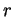
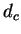
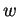
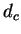
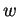

Next: Overlapping blocks
Up: Step 3: From grid
Previous: Step 3: From grid
Contents
It can happen that a point may be in the neighborhood of more than one other point.
In such a case, it is necessary to specify rules for which point will be chosen to extend the block.
To do this, FISH ranks the cells within each neighborhood and chooses that neighbor
having the highest rank, using an ad hoc formula that gives preference to points that
preserve the colinear order of matching features along the two contigs.
The rank  for each cell in the neighborhood of the candidate point is
where  is the number of cells in the point's neighborhood,  is the
distance
of the cell from the point under consideration and  is the weight.
The weight
is the number of cells in the point's neighborhood,  is the
distance
of the cell from the point under consideration and  is the weight.
The weight
When multiple points have equal rank, the point is chosen that has the smallest value
of
 . This favors points close to the diagonal.
. This favors points close to the diagonal.
Next: Overlapping blocks
Up: Step 3: From grid
Previous: Step 3: From grid
Contents
root
2003-06-27